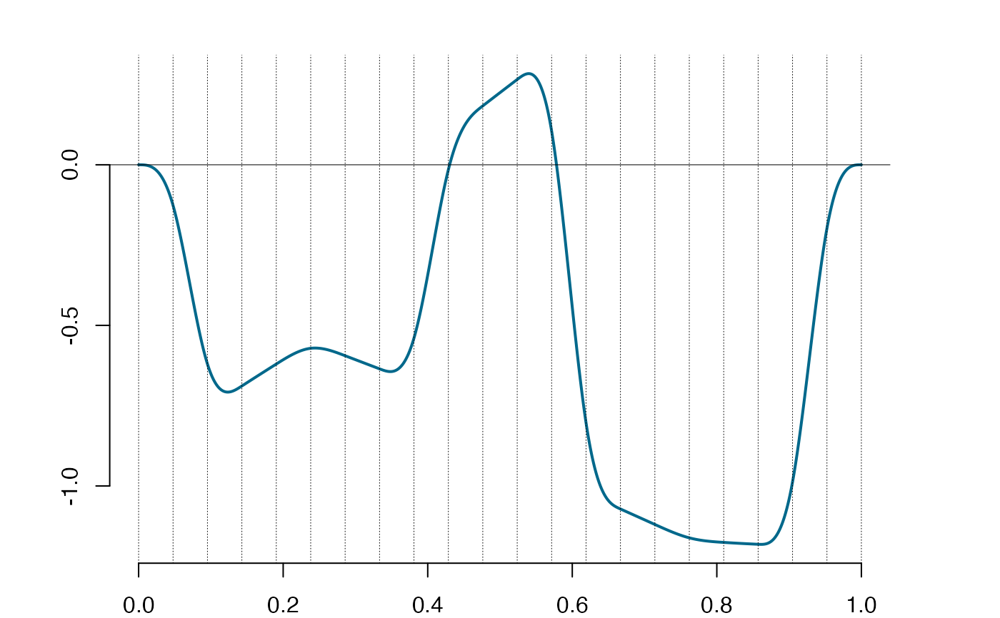
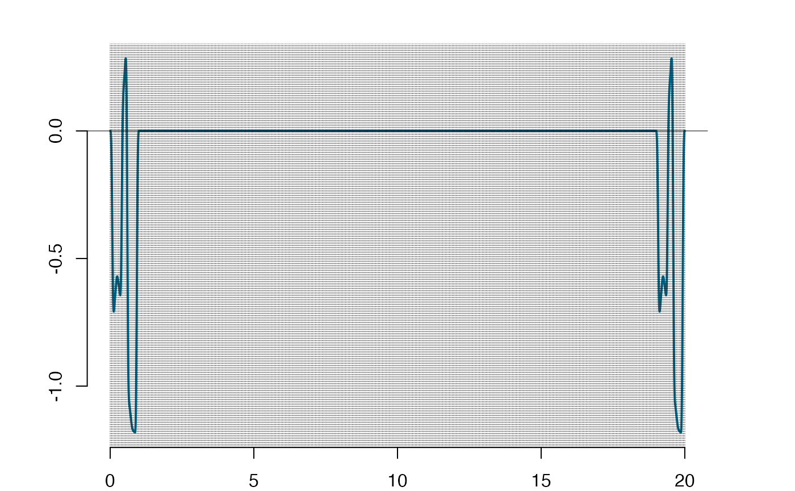
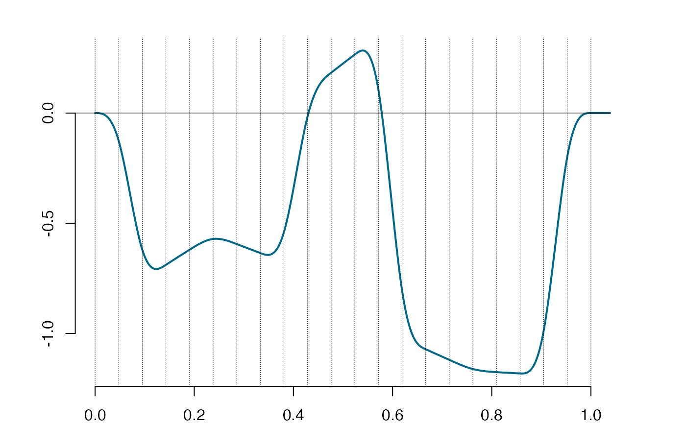
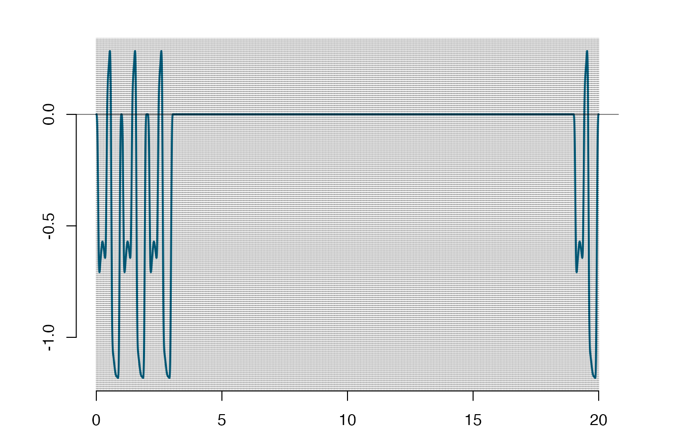

Correcting support sets and reshaping the matrix of derivatives at the knots.
Source:R/fun_exsupp.R
exsupp.RdThe function is adjusting for a potential reduction in the support sets due to negligibly small values of rows
in the derivative matrix. If the derivative matrix has a row equal to zero (or smaller than a neglible positive value) in the one-sided representation
of it (see the references and sym2one), then the corresponding knot should be removed
from the support set. The function can be used to eliminate the neglible support components from a Splinets-object.
Arguments
- S
(m+2)x(k+1)matrix, the values of the derivatives at the knots over some input support set which has the cardinalitym+2; The matrix is assumed to be in the symmetric around center form for each component of the support.- supp
NULLorNsupp x2matrix of integers, the endpoints indices for the input support intervals, whereNsuppis the number of the components in the support set; If the parameter isNULL, than the full support is assumed.- epsilon
small positive number, threshold value of the norm of rows of
S; If the norm of a row ofSis less thanepsilon, then it will be viewed as a neglible and the knot is excluded from the inside of the support set.
Value
The list of two elements: exsupp$rS is the reduced derivative matrix from which the neglible rows, if any, have been removed
and exsupp$rsupp is the corresponding reduced support.
The output matrix has all the support components in the symmetric around the center form, which is how the derivatives are kept in the Splinets-objects.
Details
This function typically would be applied to an element in the list given by SLOT
der of a Splinets-object. It eliminates from the support sets regions of negligible values
of a corresponding spline and its derivatives.
References
Liu, X., Nassar, H., Podg\(\mbox{\'o}\)rski, K. "Dyadic diagonalization of positive definite band matrices and efficient B-spline orthogonalization." Journal of Computational and Applied Mathematics (2022) <https://doi.org/10.1016/j.cam.2022.114444>.
Podg\(\mbox{\'o}\)rski, K. (2021)
"Splinets – splines through the Taylor expansion, their support sets and orthogonal bases." <arXiv:2102.00733>.
Nassar, H., Podg\(\mbox{\'o}\)rski, K. (2023) "Splinets 1.5.0 – Periodic Splinets." <arXiv:2302.07552>
See also
Splinets-class for the description of the Splinets-class;
sym2one for
switching between the representations of a derivative matrix over a general support set;
lincomb for evaluating a linear transformation of splines in a Splinets-object;
is.splinets for a diagnostic tool of the Splinets-objects;
Examples
#----------------------------------------------------#
#---Correcting support sets in a derivative matrix---#
#----------------------------------------------------#
n=20; k=3; xi=seq(0,1,by=1/(n+1)) #an even number of equally spaced knots
set.seed(5)
S=matrix(rnorm((n+2)*(k+1)),ncol=(k+1))
spl=construct(xi,k,S) #this spline will be used below to construct a 'sparse' spline
#>
#> Using method RRM to correct the derivative matrix entries.
#>
#>
#> DIAGNOSTIC CHECK of a SPLINETS object
#>
#> THE KNOTS:
#>
#>
#> THE SUPPORT SETS:
#>
#> The support sets for the splines are equal to the entire range of knots.
#>
#>
#> THE DERIVATIVES AT THE KNOTS:
#>
#> The boundary zero conditions are not satisfied for spline 1 in the input 'Splinets' object.
#> Correction of the first and last rows of the derivative matrices are made in the output 'Splinets' object.
#>
#> Spline 1 's highest derivative is not symmetrically defined at the center (the values at the two central knots should be equal).
#> Spline 1 's highest derivative values at the two central knots have been made equal by averaging the two central values in SLOT 'der'.
#>
#> The matrix of derivatives at the knots for spline 1 does not satisfy the conditions
#>
#> required for a spline (up to the accuracy SLOT 'epsilon').
#>
#> One of the reasons can be that SLOT 'taylor' is not correctly given.
#> The computed standard error per matrix entry is 1.303131 .
#>
#>
#> Correction of the LHS part of the matrix
#> Correction of the RHS part of the matrix
#> Correction of the LHS part of the matrix
#> Correction of the RHS part of the matrix
#> Correction of the LHS part of the matrix
#> Correction of the RHS part of the matrix
#> The output object Spline 1 has the derivative matrix corrected by the RRM method
#> given that SLOT 'taylor' is properly given.
#> The matrix derivative is now corrected by method RRM .
is.splinets(spl) #verification
#>
#>
#> DIAGNOSTIC CHECK of a SPLINETS object
#>
#> THE KNOTS:
#>
#>
#> THE SUPPORT SETS:
#>
#> The support sets for the splines are equal to the entire range of knots.
#>
#>
#> THE DERIVATIVES AT THE KNOTS:
#>
#> $is
#> [1] TRUE
#>
#> $robject
#> splines
#> Knots: 22 equaly distributed knots between 0 and 1
#> Size: 1 spline functions
#> Order: 3
#> Support: The full support range for each spline.
#> $Er
#> [1] 2.237243e-23
#>
plot(spl)

xxi=seq(0,20,by=1/(n+1)) #large set of knots for construction of a sparse spline
nn=length(xxi)-2
spspl=new('Splinets',knots=xxi,smorder=k) #generic object from the 'Splinets'-class
spspl@der[[1]]=matrix(0,ncol=(k+1),nrow=(nn+2)) #starting with zeros everywhere
spspl@der[[1]][1:(n+2),]=sym2one(spl@der[[1]]) #assigning local spline to a sparse spline at
spspl@der[[1]][nn+3-(1:(n+2)),]=spspl@der[[1]][(n+2):1,] #the beginning and the same at the end
spspl@der[[1]]=sym2one(spspl@der[[1]],inv=TRUE)
#at this point the object does not account for the sparsity
is.splinets(spspl) #a sparse spline on 421 knots with a non-zero terms at the first 22
#>
#>
#> DIAGNOSTIC CHECK of a SPLINETS object
#>
#> THE KNOTS:
#>
#>
#> THE SUPPORT SETS:
#>
#> The support sets for the splines are equal to the entire range of knots.
#>
#>
#> THE DERIVATIVES AT THE KNOTS:
#>
#> $is
#> [1] TRUE
#>
#> $robject
#> splines
#> Knots: 421 equaly distributed knots between 0 and 20
#> Size: 1 spline functions
#> Order: 3
#> Support: The full support range for each spline.
#> $Er
#> [1] 5.319697e-23
#>
#and at the last 22 knots, the actual support set is not yet reported
plot(spspl)

plot(spspl,xlim=c(0,1)) #the local part of the sparse spline

exsupp(spspl@der[[1]]) #the actual support of the spline given the sparse derivative matrix
#> $rS
#> [,1] [,2] [,3] [,4]
#> [1,] 0.00000000 0.0000000 0.00000000 -7.024458e+03
#> [2,] -0.12641647 -7.9642378 -334.49798786 1.469705e+04
#> [3,] -0.62041814 -7.2293915 365.36153367 -7.687523e+03
#> [4,] -0.68878219 1.4527638 -0.71101105 -2.796661e-01
#> [5,] -0.62041412 1.4185891 -0.72432849 -9.844306e+02
#> [6,] -0.57139992 0.2679628 -47.60197450 1.003237e+03
#> [7,] -0.59455541 -0.8613413 0.17120093 3.470285e-01
#> [8,] -0.63537131 -0.8527954 0.18772610 7.557291e+03
#> [9,] -0.53976211 7.7245010 360.05872310 -1.397604e+04
#> [10,] -0.01522038 9.0243000 -305.46716206 6.403647e+03
#> [11,] 0.18341751 1.7386151 -0.53160753 5.472878e-01
#> [12,] 0.26561582 1.7139209 -0.50554621 5.472878e-01
#> [13,] 0.10491122 -13.5401950 -640.16732427 -1.343290e+04
#> [14,] -0.80330481 -14.8951404 583.25961806 2.569197e+04
#> [15,] -1.07176004 -1.0095326 -0.06409093 -1.224980e+04
#> [16,] -1.11993704 -1.0145600 -0.14705771 -1.742302e+00
#> [17,] -1.16157407 -0.5905113 17.95710289 3.801874e+02
#> [18,] -1.17579757 -0.1426081 0.85483042 -3.591477e+02
#> [19,] -1.18160708 -0.1011358 0.88700587 6.756845e-01
#> [20,] -0.98749213 12.4103942 524.59725595 1.099792e+04
#> [21,] -0.19762544 12.4504025 -522.91690639 -2.199780e+04
#> [22,] 0.00000000 0.0000000 0.00000000 1.098126e+04
#> [23,] 0.00000000 0.0000000 0.00000000 -7.024458e+03
#> [24,] -0.12641647 -7.9642378 -334.49798786 1.469705e+04
#> [25,] -0.62041814 -7.2293915 365.36153367 -7.687523e+03
#> [26,] -0.68878219 1.4527638 -0.71101105 -2.796661e-01
#> [27,] -0.62041412 1.4185891 -0.72432849 -9.844306e+02
#> [28,] -0.57139992 0.2679628 -47.60197450 1.003237e+03
#> [29,] -0.59455541 -0.8613413 0.17120093 3.470285e-01
#> [30,] -0.63537131 -0.8527954 0.18772610 7.557291e+03
#> [31,] -0.53976211 7.7245010 360.05872310 -1.397604e+04
#> [32,] -0.01522038 9.0243000 -305.46716206 6.403647e+03
#> [33,] 0.18341751 1.7386151 -0.53160753 5.472878e-01
#> [34,] 0.26561582 1.7139209 -0.50554621 5.472878e-01
#> [35,] 0.10491122 -13.5401950 -640.16732427 -1.343290e+04
#> [36,] -0.80330481 -14.8951404 583.25961806 2.569197e+04
#> [37,] -1.07176004 -1.0095326 -0.06409093 -1.224980e+04
#> [38,] -1.11993704 -1.0145600 -0.14705771 -1.742302e+00
#> [39,] -1.16157407 -0.5905113 17.95710289 3.801874e+02
#> [40,] -1.17579757 -0.1426081 0.85483042 -3.591477e+02
#> [41,] -1.18160708 -0.1011358 0.88700587 6.756845e-01
#> [42,] -0.98749213 12.4103942 524.59725595 1.099792e+04
#> [43,] -0.19762544 12.4504025 -522.91690639 -2.199780e+04
#> [44,] 0.00000000 0.0000000 0.00000000 1.098126e+04
#>
#> $rsupp
#> [,1] [,2]
#> [1,] 1 22
#> [2,] 400 421
#>
#Expanding the previous spline by building a slightly more complex support set
spspl@der[[1]][(n+1)+(1:(n+2)),]=sym2one(spl@der[[1]]) #double the first component of the
#support because these are tangent supports
spspl@der[[1]][(2*n+3)+(1:(n+2)),]=sym2one(spl@der[[1]]) #tdetect a single component of
#the support with no internal knots removed
is.splinets(spspl)
#>
#>
#> DIAGNOSTIC CHECK of a SPLINETS object
#>
#> THE KNOTS:
#>
#>
#> THE SUPPORT SETS:
#>
#> The support sets for the splines are equal to the entire range of knots.
#>
#>
#> THE DERIVATIVES AT THE KNOTS:
#>
#> $is
#> [1] TRUE
#>
#> $robject
#> splines
#> Knots: 421 equaly distributed knots between 0 and 20
#> Size: 1 spline functions
#> Order: 3
#> Support: The full support range for each spline.
#> $Er
#> [1] 1.105124e-22
#>
plot(spspl)

es=exsupp(spspl@der[[1]])
es[[2]] #the new support made of three components with the two first ones
#> [,1] [,2]
#> [1,] 1 43
#> [2,] 44 65
#> [3,] 400 421
#separated by an interval with no knots in it
spspl@der[[1]]=es[[1]] #defining the spline on the evaluated actual support
spspl@supp[[1]]=es[[2]]
#Example with reduction of not a full support.
xi1=seq(0,14/(n+1),by=1/(n+1)); n1=13; #the odd number of equally spaced knots
S1=matrix(rnorm((n1+2)*(k+1)),ncol=(k+1))
spl1=construct(xi1,k,S1) #construction of a local spline
#>
#> Using method RRM to correct the derivative matrix entries.
#>
#>
#> DIAGNOSTIC CHECK of a SPLINETS object
#>
#> THE KNOTS:
#>
#>
#> THE SUPPORT SETS:
#>
#> The support sets for the splines are equal to the entire range of knots.
#>
#>
#> THE DERIVATIVES AT THE KNOTS:
#>
#> The boundary zero conditions are not satisfied for spline 1 in the input 'Splinets' object.
#> Correction of the first and last rows of the derivative matrices are made in the output 'Splinets' object.
#>
#> Spline 1 's highest derivative at the central knot is not equal to zero.
#> Spline 1 's highest derivative value at the central knot has been made equal to zero.
#>
#> The matrix of derivatives at the knots for spline 1 does not satisfy the conditions
#>
#> required for a spline (up to the accuracy SLOT 'epsilon').
#>
#> One of the reasons can be that SLOT 'taylor' is not correctly given.
#> The computed standard error per matrix entry is 1.736963 .
#>
#>
#> Correction of the LHS part of the matrix
#> Correction of the RHS part of the matrix
#> Correction of the LHS part of the matrix
#> Correction of the RHS part of the matrix
#> The output object Spline 1 has the derivative matrix corrected by the RRM method
#> given that SLOT 'taylor' is properly given.
#> The matrix derivative is now corrected by method RRM .
xi2=seq(16/(n+1),42/(n+1),by=1/(n+1)); n2=25; #the odd number of equally spaced knots
S2=matrix(rnorm((n2+2)*(k+1)),ncol=(k+1))
spl2=construct(xi2,k,S2) #construction of a local spline
#>
#> Using method RRM to correct the derivative matrix entries.
#>
#>
#> DIAGNOSTIC CHECK of a SPLINETS object
#>
#> THE KNOTS:
#>
#>
#> THE SUPPORT SETS:
#>
#> The support sets for the splines are equal to the entire range of knots.
#>
#>
#> THE DERIVATIVES AT THE KNOTS:
#>
#> The boundary zero conditions are not satisfied for spline 1 in the input 'Splinets' object.
#> Correction of the first and last rows of the derivative matrices are made in the output 'Splinets' object.
#>
#> Spline 1 's highest derivative at the central knot is not equal to zero.
#> Spline 1 's highest derivative value at the central knot has been made equal to zero.
#>
#> The matrix of derivatives at the knots for spline 1 does not satisfy the conditions
#>
#> required for a spline (up to the accuracy SLOT 'epsilon').
#>
#> One of the reasons can be that SLOT 'taylor' is not correctly given.
#> The computed standard error per matrix entry is 1.455238 .
#>
#>
#> Correction of the LHS part of the matrix
#> Correction of the RHS part of the matrix
#> Correction of the LHS part of the matrix
#> Correction of the RHS part of the matrix
#> Correction of the LHS part of the matrix
#> Correction of the RHS part of the matrix
#> Correction of the LHS part of the matrix
#> Correction of the RHS part of the matrix
#> The output object Spline 1 has the derivative matrix corrected by the RRM method
#> given that SLOT 'taylor' is properly given.
#> The matrix derivative is now corrected by method RRM .
spspl@der[[1]][1:15,]=sym2one(spl1@der[[1]])
spspl@der[[1]][16,]=rep(0,k+1)
spspl@der[[1]][17:43,]=sym2one(spl2@der[[1]])
spspl@der[[1]][1:43,]=sym2one(spspl@der[[1]][1:43,],inv=TRUE)
is.splinets(spspl) #three intervals in the support are repported
#>
#>
#> DIAGNOSTIC CHECK of a SPLINETS object
#>
#> THE KNOTS:
#>
#>
#> THE SUPPORT SETS:
#>
#>
#>
#> THE DERIVATIVES AT THE KNOTS:
#>
#> $is
#> [1] TRUE
#>
#> $robject
#> splines
#> Knots: 421 equaly distributed knots between 0 and 20
#> Size: 1 spline functions
#> Order: 3
#> Support: Not the full range support, the number of support intervals varies from 3 to 3
#> $Er
#> [1] 9.544367e-23
#>
exsupp(spspl@der[[1]],spspl@supp[[1]])
#> $rS
#> [,1] [,2] [,3] [,4]
#> [1,] 0.00000000 0.00000000 0.000000e+00 6.962683e+03
#> [2,] 0.12530473 7.89419798 3.315563e+02 -1.475042e+04
#> [3,] 0.61167552 6.95876572 -3.708445e+02 7.759770e+03
#> [4,] 0.66223634 -1.90256943 -1.331607e+00 2.880795e-01
#> [5,] 0.57013322 -1.96565265 -1.317889e+00 4.792968e+02
#> [6,] 0.48366223 -1.48498890 2.150577e+01 -4.458285e+02
#> [7,] 0.42930802 -0.96637928 2.758378e-01 2.991623e-01
#> [8,] 0.38360809 -0.95290496 2.900836e-01 0.000000e+00
#> [9,] 0.33856003 -0.93912474 2.886858e-01 -2.935340e-02
#> [10,] 0.30282335 -0.38003459 2.319310e+01 4.809927e+02
#> [11,] 0.30174075 0.13964851 -1.366411e+00 -5.157497e+02
#> [12,] 0.30683597 0.07423548 -1.380937e+00 -3.050486e-01
#> [13,] 0.25744444 -3.22725756 -1.372818e+02 -2.853918e+03
#> [14,] 0.05155453 -3.24793558 1.364133e+02 5.747596e+03
#> [15,] 0.00000000 0.00000000 0.000000e+00 -2.864679e+03
#> [16,] 0.00000000 0.00000000 0.000000e+00 4.687346e+03
#> [17,] 0.08435637 5.31445157 2.232070e+02 -8.463567e+03
#> [18,] 0.43817904 6.34747342 -1.798200e+02 3.797073e+03
#> [19,] 0.60489655 2.08968596 9.929753e-01 -5.580409e-01
#> [20,] 0.70552119 2.13633780 9.664019e-01 -6.264551e-01
#> [21,] 0.80833598 2.18164668 9.365707e-01 2.773512e+03
#> [22,] 0.96319963 5.37081712 1.330086e+02 -7.136497e+03
#> [23,] 1.24132340 3.61329247 -2.068246e+02 4.357275e+03
#> [24,] 1.25730612 -1.29527809 6.646595e-01 -7.460259e-01
#> [25,] 1.19636636 -1.26447348 6.291344e-01 1.014451e+04
#> [26,] 1.31943347 10.26719516 4.837009e+02 -1.942446e+04
#> [27,] 2.00718681 11.27738115 -4.412731e+02 9.257870e+03
#> [28,] 2.21050562 0.76082567 -4.221931e-01 -1.174983e-01
#> [29,] 2.24625462 0.74058802 -4.277882e-01 0.000000e+00
#> [30,] 2.28106217 0.72188489 -3.577435e-01 1.470939e+00
#> [31,] 1.81791045 -30.61381046 -1.315741e+03 -2.762306e+04
#> [32,] -0.14700936 -31.23514937 1.289645e+03 5.471312e+04
#> [33,] -0.65938084 -0.51494299 6.034415e-01 -2.706988e+04
#> [34,] -0.68322103 -0.48641347 5.947985e-01 -1.815019e-01
#> [35,] -0.67200135 1.66550463 8.978576e+01 1.873010e+03
#> [36,] -0.54846294 2.31415415 -6.254248e+01 -3.198893e+03
#> [37,] -0.48567849 0.81621918 -3.707867e-01 1.305606e+03
#> [38,] -0.44723610 0.79826007 -3.834962e-01 -2.668994e-01
#> [39,] -0.40965557 0.78018446 -3.756793e-01 1.641560e-01
#> [40,] -0.31677752 4.29989266 1.482034e+02 3.120161e+03
#> [41,] -0.06213131 3.91427280 -1.643995e+02 -6.564661e+03
#> [42,] 0.00000000 0.00000000 0.000000e+00 3.452389e+03
#> [43,] 0.00000000 0.00000000 0.000000e+00 -7.024458e+03
#> [44,] -0.12641647 -7.96423781 -3.344980e+02 1.469705e+04
#> [45,] -0.62041814 -7.22939148 3.653615e+02 -7.687523e+03
#> [46,] -0.68878219 1.45276382 -7.110111e-01 -2.796661e-01
#> [47,] -0.62041412 1.41858907 -7.243285e-01 -9.844306e+02
#> [48,] -0.57139992 0.26796281 -4.760197e+01 1.003237e+03
#> [49,] -0.59455541 -0.86134132 1.712009e-01 3.470285e-01
#> [50,] -0.63537131 -0.85279544 1.877261e-01 7.557291e+03
#> [51,] -0.53976211 7.72450097 3.600587e+02 -1.397604e+04
#> [52,] -0.01522038 9.02430004 -3.054672e+02 6.403647e+03
#> [53,] 0.18341751 1.73861505 -5.316075e-01 5.472878e-01
#> [54,] 0.26561582 1.71392091 -5.055462e-01 5.472878e-01
#> [55,] 0.10491122 -13.54019505 -6.401673e+02 -1.343290e+04
#> [56,] -0.80330481 -14.89514043 5.832596e+02 2.569197e+04
#> [57,] -1.07176004 -1.00953265 -6.409093e-02 -1.224980e+04
#> [58,] -1.11993704 -1.01455999 -1.470577e-01 -1.742302e+00
#> [59,] -1.16157407 -0.59051130 1.795710e+01 3.801874e+02
#> [60,] -1.17579757 -0.14260813 8.548304e-01 -3.591477e+02
#> [61,] -1.18160708 -0.10113583 8.870059e-01 6.756845e-01
#> [62,] -0.98749213 12.41039421 5.245973e+02 1.099792e+04
#> [63,] -0.19762544 12.45040253 -5.229169e+02 -2.199780e+04
#> [64,] 0.00000000 0.00000000 0.000000e+00 1.098126e+04
#> [65,] 0.00000000 0.00000000 0.000000e+00 -7.024458e+03
#> [66,] -0.12641647 -7.96423781 -3.344980e+02 1.469705e+04
#> [67,] -0.62041814 -7.22939148 3.653615e+02 -7.687523e+03
#> [68,] -0.68878219 1.45276382 -7.110111e-01 -2.796661e-01
#> [69,] -0.62041412 1.41858907 -7.243285e-01 -9.844306e+02
#> [70,] -0.57139992 0.26796281 -4.760197e+01 1.003237e+03
#> [71,] -0.59455541 -0.86134132 1.712009e-01 3.470285e-01
#> [72,] -0.63537131 -0.85279544 1.877261e-01 7.557291e+03
#> [73,] -0.53976211 7.72450097 3.600587e+02 -1.397604e+04
#> [74,] -0.01522038 9.02430004 -3.054672e+02 6.403647e+03
#> [75,] 0.18341751 1.73861505 -5.316075e-01 5.472878e-01
#> [76,] 0.26561582 1.71392091 -5.055462e-01 5.472878e-01
#> [77,] 0.10491122 -13.54019505 -6.401673e+02 -1.343290e+04
#> [78,] -0.80330481 -14.89514043 5.832596e+02 2.569197e+04
#> [79,] -1.07176004 -1.00953265 -6.409093e-02 -1.224980e+04
#> [80,] -1.11993704 -1.01455999 -1.470577e-01 -1.742302e+00
#> [81,] -1.16157407 -0.59051130 1.795710e+01 3.801874e+02
#> [82,] -1.17579757 -0.14260813 8.548304e-01 -3.591477e+02
#> [83,] -1.18160708 -0.10113583 8.870059e-01 6.756845e-01
#> [84,] -0.98749213 12.41039421 5.245973e+02 1.099792e+04
#> [85,] -0.19762544 12.45040253 -5.229169e+02 -2.199780e+04
#> [86,] 0.00000000 0.00000000 0.000000e+00 1.098126e+04
#>
#> $rsupp
#> [,1] [,2]
#> [1,] 1 15
#> [2,] 17 43
#> [3,] 44 65
#> [4,] 400 421
#>